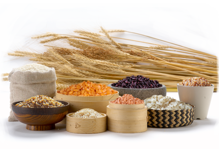

-
生态粮油
绿色生态粮油加工、生产技术规范，并经有机认证得到的一切农副产品，是指在生产加工中不使用化学农药、化肥、化学防腐剂和添加剂，因此它是真正的源于自然、富营养、高品质的安全环保生态食物。

-
保健食品
保健食品亦称功能性食品。一个特定的食品种类。它具有调节人体功能的作用,但不以治疗疾病为目的, 保健食品的保健作用在当今的社会中，也正在逐步被广大群众所接受。
-
调养茶品
中国茶道是修身养性。静是中国茶道修习的必由途径。如何从小小的茶壶中去体悟宇宙的奥秘、如何从淡淡的茶汤中去品位人生、如何在茶事活动中明心见性、如何通过茶道的修习来澡雪精神，锻炼人格，超越自我——静也。茶艺是茶道的载体，茶道是风雅艺术。
-
理疗产品
根据国家相关法律生产，具有产品所有资质，产品根据具体情况研发，从选材到加工层层把关，高科技精密配置，纯天然植物提取，安全可靠，温和不刺激，使用后无任何不适，不会产生依赖性，无任何副作用，让客户买的放心，用得舒心.
-
辅助用品
不仅做工精细、手感好、美观，更重要的是绝对环保安全,价格虽低廉，品质仍达标。在同行业中具有很强的竞争能力。可根据客户要求来样定做。
-
旅游疗养
疗养旅游，又称休养旅游，就是集休闲、疗养和观光于一身的健康之旅，在欧美以及日韩各国流行多年。2000年以来，休闲疗养旅游日益风行，成为众多旅游爱好者，特别是企业家、公务员、白领阶层以及老年群体的时尚休闲行动。